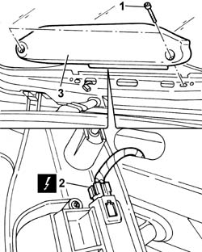
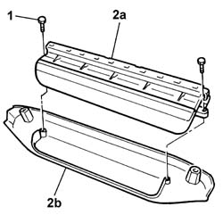

5550D16 third stop light - r+r
- Path
- Procedures > 55 ELECTRICAL EQUIPMENT > 5550 WARNING AND MANOEUVRING INDICATORS > 5550D BRAKE AND REVERSING LIGHTS > 5550D16 third stop light - r+r
- Kind
- repair procedure (removal / refitting; the operation number is the code)
- Applies to
- all engines; all production periods
- Interactive page
- https://sloeber94.github.io/elrnDB-fPnd/en/#/2752991
Applies to: all engines; all production periods
 Removing
Removing
 Refitting
RefittingDisconnect the battery negative terminal.
1. Undo the retaining bolts.
2. Disconnect the electrical connection.
 | Name | Connector |
|---|---|---|
2 | Additional ("third brake light") | F40 |
3. Remove the third brake light complete with surround.

Applies to: all engines; all production periods
1. Undo the retaining bolts.
2. Separate the third brake light (2a) from the surround (2b).

Applies to: all engines; all production periods
Refitting
RemovingFit the third brake light on the surround and tighten the fixing bolts.
Connect the electrical connection.
| Name | Connector |
|---|---|---|
- | Additional ("third brake light") | F40 |
Fit the third brake light complete with surround and tighten the fixing bolts.